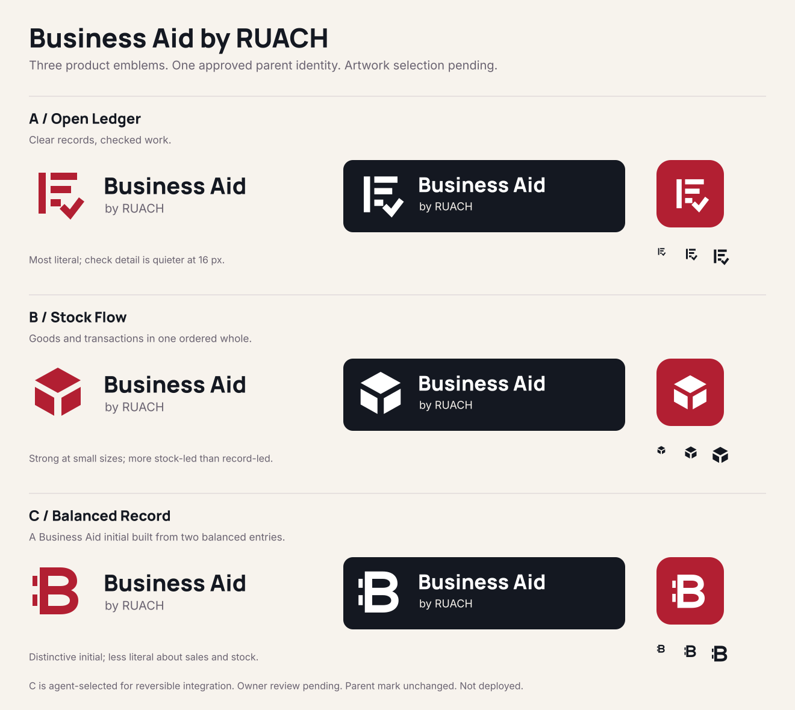

Choose the Business Aid product emblem
These are unapproved concepts, not release assets. Each keeps RUACH's Crimson, Obsidian, Ivory, Manrope wordmark and Inter endorsement. The parent Living Breath mark is unchanged.

Owner artwork review remains pending. The coordinator selected C for reversible branch integration while the owner was unavailable; A and B remain available for comparison. No production deployment is authorized.